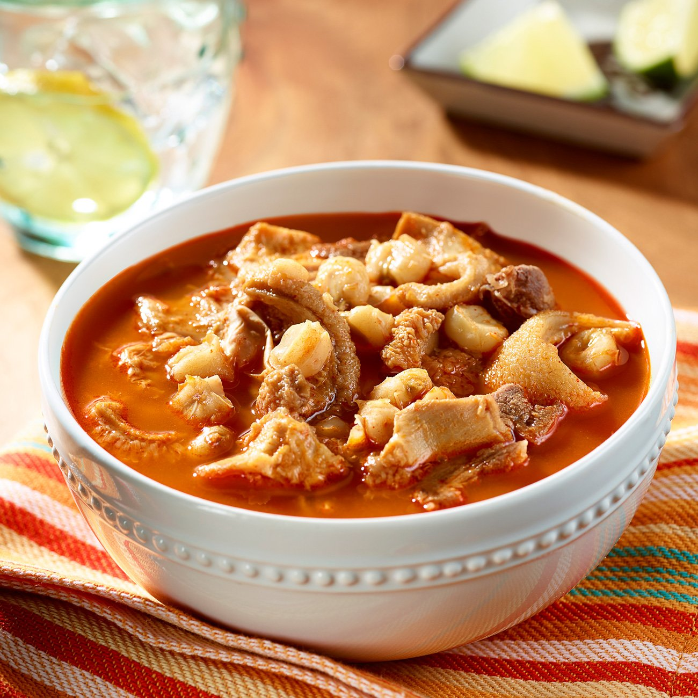

Menudo

Description
This is my dads favorite winter breakfast. It's also super simple to make.
Ingredients
- 2lbs. raw tripe
- 24oz can of hominy
- jalapeno
- onion
- lime juice
- 1 pckg of menudo mix
Steps
- Cut the tripe into 2in. squares
- Boil the tripe for one hour.
- Add the Menudo mix and hominy
- Bring to a simmer for another hour.
- It should be ready to bowl.
- Add diced jalapeno, onion, and lime juice as needed.
back